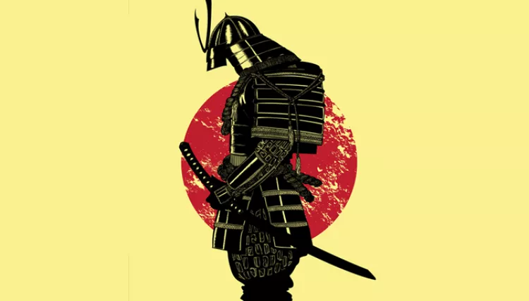

|  | Home | princípios | Referências |
O Último Samurai
No filme o último Samurai o soldado Nathan Algren é contratado pelo imperador do Japão para treinar uma nova força militar com um padrão ocidental e enfrentar os samurais que protestam contra a ocidentalização da cultura japonesa, porém após uma batalha malsucedida Nathan é capturado e passa meses vivendo como prisioneiro dos samurais, durante esse período ele aprende sobre o bushido e inclusive adota esse código de conduta.
Shiroyama -Sabaton
Na música Shiroyama da banda Sabaton é descrita uma enorme batalha que ocorreu no Japão cuja o nome é igual ao da música, essa batalha também é a mesma mostrada no filme acima, tendo sido considerada um confronto entre ideais tradicionais e antigos e ideais novos e estrangeiros.